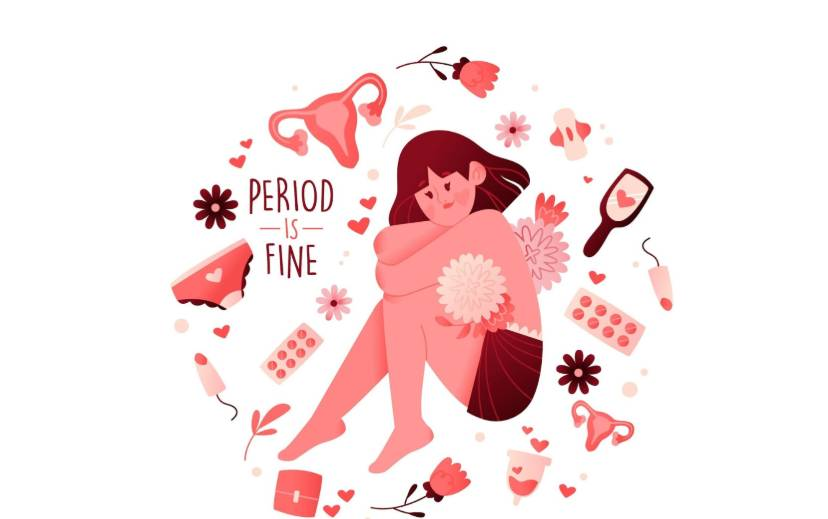

Track Your Cycle, Empower Your Health 💖
Manage your cycle with ease and stay informed about your health journey 📅
Get smarter every cycle
Track cycle symptoms in seconds
See how your cycle affects your mood
Know when your period, PMS and ovulation days are coming
Anticipate symptoms before they show up
Know when you’re fertile
Turn gut feelings into evidence

10 Common Period Myths vs. Medical Facts
Debunking widespread misconceptions with science and medicine.
You cannot get pregnant if you are on your period.
While it is less likely, you can absolutely get pregnant during your period. Menstrual cycles can vary significantly in length, and ovulation can sometimes happen early. Furthermore, human sperm can survive inside the female reproductive tract for up to five days. If you have unprotected sex during your period and ovulate shortly after, conception can happen.
Period blood is dirty, toxic, or full of body waste.
Menstrual blood is not impure or toxic. It is simply a combination of regular blood, shed uterine tissue, mucus, and normal vaginal secretions. It is the exact same blood that flows through the rest of your veins, mixed with the healthy lining that your body prepared to support a potential pregnancy.
Severe, debilitating period pain is just a normal part of being a woman.
Mild to moderate cramping is common due to uterine contractions, but severe, debilitating pain that forces you to miss school, work, or daily activities is not normal. Intense pain can be a sign of underlying medical conditions like endometriosis, adenomyosis, or uterine fibroids. If period pain disrupts your life, you should consult a healthcare provider.
Every person has a perfect 28-day menstrual cycle.
The 28-day cycle is just an average, not a universal rule. Normal, healthy menstrual cycles can range anywhere from 21 to 35 days for adults, and up to 45 days for teens. Your cycle can also fluctuate slightly from month to month due to stress, illness, diet, or changes in exercise habits.
You should avoid exercising or playing sports during your period.
Exercise is not only safe during your period, but it is actually highly recommended. Physical activity releases endorphins, which act as natural painkillers. Regular movement, stretching, and light cardio can significantly reduce period cramps, alleviate bloating, and improve your mood.
Swimming during your period is unsafe, unhygienic, or will attract sharks.
You can absolutely swim while on your period. Using a tampon, menstrual cup, or disc prevents blood from leaking into the water. The water pressure also temporarily decreases your flow while you are submerged. As for the ocean, marine biologists have confirmed there is no scientific evidence linking menstruation to shark attacks.
Using a tampon will break your virginity.
Virginity is a social and cultural concept, not a medical condition. Using a tampon does not mean someone has had sex. While a tampon can occasionally stretch or tear the hymen—a thin piece of tissue at the opening of the vagina—this can also happen naturally through sports, riding a bike, or general physical activity.
Taking a bath or washing your hair will alter your flow or damage your health.
Water will not stop, increase, or permanently alter your menstrual flow. In fact, taking a warm bath or shower is excellent for period self-care. The heat relaxes the pelvic muscles and dilates blood vessels, which helps soothe cramps and lower stress.
People who live or work together will eventually sync their periods.
The idea of period syncing, known as the McClintock effect, has been debunked by modern research. Large-scale data tracking shows that periods do not actually align due to pheromones. Any overlap in cycles between roommates or friends is simply a mathematical coincidence, as individual cycle lengths naturally vary.
Only women experience periods.
Menstuation is a biological function, not a gender identity. Not all women have periods due to menopause, stress, medical conditions, or hysterectomies. Conversely, transgender men, non-binary individuals, and intersex people can and do menstruate.